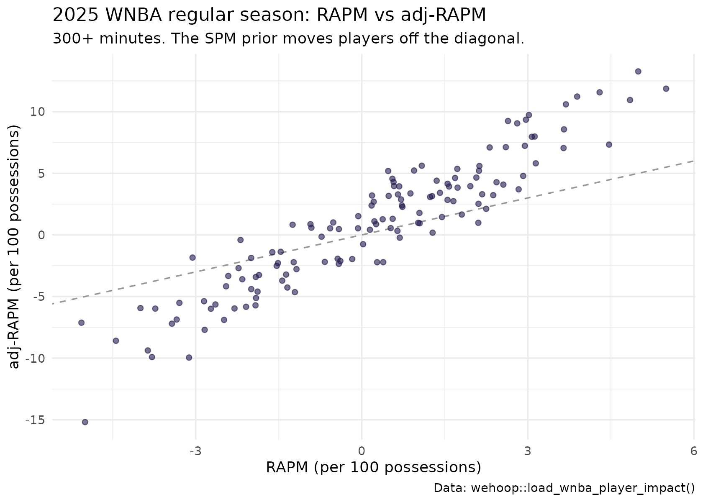

WNBA Player Impact Model: RAPM, SPM, BPM, WAR and DARKO-Style Projections
Saiem Gilani
Source:vignettes/articles/wnba-player-impact-model.Rmd
wnba-player-impact-model.RmdThe WNBA player impact suite estimates how much each player
changes her team’s scoring margin per 100 possessions, six different
ways, and publishes all six side by side for every player-season since
1997. On/off regression (RAPM) sees everything that happens
while a player is on the floor but is noisy. Box score models (SPM, BPM)
are stable but see only what the box records. A cross-season filter
(DARKO-style) blends seasons and projects the next one, and WAR converts
the rating into wins. load_wnba_player_impact() returns the
result.
This article explains what each engine estimates, how the suite is built, how well it holds up out of sample, and where it is weakest. It condenses the official model card in the wehoop-wnba-stats-data repository; numbers quoted from that card are labelled as such.
What the model estimates
Every engine is on the same scale: points per 100 possessions relative to an average player, split into offense and defense, except WAR, which counts wins.
| Engine | Columns | What it measures |
|---|---|---|
| RAPM |
o_rapm, d_rapm, rapm
|
Regularized adjusted plus-minus: a ridge regression of possession outcomes on the ten players on the court |
| adj-RAPM |
o_adj_rapm, d_adj_rapm,
adj_rapm
|
RAPM with a prior from the previous season’s SPM, instead of shrinking every player to zero |
| SPM |
ospm, dspm, spm
|
Statistical plus-minus: box score rates weighted by coefficients fitted to regular-season RAPM |
| BPM |
obpm, dbpm, bpm
|
Box plus-minus (BPM 2.0 design) from box score logs and listed positions |
| WAR | war |
Wins above replacement: the RAPM rating times a calibrated points-per-win, with replacement level at -2.0 |
| DARKO-style |
darko_filtered_skill,
darko_projected_rating,
darko_projected_sd
|
A Kalman filter over the RAPM history with an aging curve: a filtered skill estimate and a projection for next season, with its standard deviation |
Positive is good for every column, including defense: a positive
d_rapm means the player’s teams allowed fewer points with
her on the floor.
Rows are one per player, team and season type (regular season or
playoffs). Possession counts (off_poss,
def_poss), minutes (min) and games
(gp) come with each row.
Loading the ratings
impact <- load_wnba_player_impact(seasons = 2024:2025)
impact |> count(season, season_type)
#> # A tibble: 4 × 3
#> season season_type n
#> <int> <chr> <int>
#> 1 2024 Playoffs 89
#> 2 2024 Regular Season 157
#> 3 2025 Playoffs 91
#> 4 2025 Regular Season 181The top of the 2025 regular season by WAR, among players with at least 300 minutes:
impact |>
filter(season == 2025, season_type == "Regular Season", min >= 300) |>
arrange(desc(war)) |>
select(player_name, team_abbreviation, gp, min, rapm, adj_rapm, spm, bpm, war) |>
mutate(across(where(is.double), ~ round(.x, 2))) |>
head(15)
#> # A tibble: 15 × 9
#> player_name team_abbreviation gp min rapm adj_rapm spm bpm war
#> <chr> <chr> <int> <dbl> <dbl> <dbl> <dbl> <dbl> <dbl>
#> 1 A'ja Wilson LVA 40 1247 5.5 11.9 2.2 11.4 10.4
#> 2 Alyssa Thomas PHX 39 1220 4.3 11.6 3.2 13.1 8.6
#> 3 Skylar Diggins SEA 43 1346 3.69 10.6 1.22 5.86 8.46
#> 4 Napheesa Coll… MIN 33 1065 4.85 10.9 1.75 17.6 7.93
#> 5 Courtney Will… MIN 44 1262 3.64 7.05 1.48 12.5 7.8
#> 6 Naz Hillmon ATL 44 1122 4.47 7.33 0.33 9.65 7.8
#> 7 Dearica Hamby LAS 44 1372 3.02 9.73 1.23 0.47 7.75
#> 8 Jackie Young LVA 44 1336 3.14 5.81 1.46 8.85 7.58
#> 9 Breanna Stewa… NYL 31 947 4.99 13.3 1.49 7.38 7.46
#> 10 Gabby Williams SEA 44 1390 2.6 7.12 0.73 4.11 7.08
#> 11 Allisha Gray ATL 42 1452 2.43 4.27 0.94 11.4 6.98
#> 12 Kayla McBride MIN 39 1221 2.92 4.78 0.47 11.5 6.54
#> 13 Veronica Burt… GSV 44 1291 2.81 9.05 1.82 8.84 6.54
#> 14 Lexie Hull IND 44 1187 2.95 7.23 -0.44 2.2 6.47
#> 15 Kelsey Mitche… IND 44 1385 2.12 5.21 0.4 6.06 6.34Data
The suite is built from the WNBA Stats API: per-game play-by-play,
rotation and box score data, plus season-level game logs and player
indexes, stored in the wehoop-wnba-stats-raw repository and read offline
so every build is reproducible. The possession layer is the same one
published as load_wnba_stats_possessions(), with the five
players on each side of every possession.
As reported in the model card, the release covers 30 seasons (1997-2026). The card also records two inherited caveats: rotation data is sparse before about 2015, and pre-2005 team game logs are repaired from player sums during the build.
How the model works
Seasons are built earliest first, because two engines carry information forward in time.
- Possessions. Each possession becomes a row with the ten players on the court and the points scored.
- RAPM. A ridge regression estimates every player’s offensive and defensive effect jointly. Ridge regularization shrinks players with few possessions toward zero, which keeps the estimates stable when two players almost always share the court. The model card’s O/D split is the native attribution: no separate explainability step is needed.
-
SPM. Once per season, ridge regression (alpha = 100
in the published coefficients) fits box score rates per 100 possessions
to that season’s regular-season RAPM. Playoffs are
excluded from the fit because a roughly 15-game sample would train noise
on noise. The fitted coefficients ship beside the release as
wnba_player_impact_spm_coefficients.json. - adj-RAPM. RAPM again, but each player is shrunk toward her previous season’s SPM rather than toward zero. A gap season deliberately breaks the prior chain.
- BPM. A box plus-minus from box score logs and listed positions.
- DARKO-style filter. A per-season Kalman update over the RAPM panel with an aging curve. Playoff form enters as a possession-weighted blend rather than a second time step, so a season of aging is not applied twice.
- WAR. RAPM times a calibrated points-per-win, measured against a replacement level of -2.0.
Fit RAPM yourself
wehoop exports the RAPM step: wnba_rapm()
fits a ridge RAPM to any possession table with off_player_1
to off_player_5, def_player_1 to
def_player_5 and points, such as
load_wnba_stats_possessions(). Its cross-validated penalty
and design differ from the suite’s engine, so expect close but not
identical numbers. The women’s
college RAPM article walks through it and compares the result with
the published o_rapm.
How well does it work?
Do the engines agree?
The engines measure related but different things, so they should correlate without being duplicates.
rs_2025 <- impact |>
filter(season == 2025, season_type == "Regular Season", min >= 300)
rs_2025 |>
select(rapm, adj_rapm, spm, bpm, darko_filtered_skill, war) |>
cor(use = "pairwise.complete.obs") |>
round(2)
#> rapm adj_rapm spm bpm darko_filtered_skill war
#> rapm 1.00 0.94 0.63 0.59 1.00 0.92
#> adj_rapm 0.94 1.00 0.63 0.41 0.94 0.83
#> spm 0.63 0.63 1.00 0.52 0.62 0.65
#> bpm 0.59 0.41 0.52 1.00 0.58 0.60
#> darko_filtered_skill 1.00 0.94 0.62 0.58 1.00 0.91
#> war 0.92 0.83 0.65 0.60 0.91 1.00These correlations are for the 131 players with at least 300
regular-season minutes in 2025. Two things stand out. The box engines
(SPM, BPM) form their own cluster, related to RAPM but far from
identical. And within a single season, darko_filtered_skill
moves almost in lockstep with that season’s rapm (r = 0.996
here): the filter’s value is in what it carries across seasons and in
the projection, not in re-ranking players within one.
ggplot(rs_2025, aes(rapm, adj_rapm)) +
geom_abline(linetype = "dashed", color = "grey60") +
geom_point(alpha = 0.6, color = "#221A4D") +
labs(
title = "2025 WNBA regular season: RAPM vs adj-RAPM",
subtitle = "300+ minutes. The SPM prior moves players off the diagonal.",
x = "RAPM (per 100 possessions)", y = "adj-RAPM (per 100 possessions)",
caption = "Data: wehoop::load_wnba_player_impact()"
) +
theme_minimal()
Does the projection predict next season?
darko_projected_rating is made with data through season
t only, so comparing it with the RAPM a player actually posts
in season t + 1 is an honest out-of-sample test. Here is the
2024 projection against 2025 regular season RAPM, alongside the simplest
possible baseline: carry 2024 RAPM forward unchanged.
proj_2024 <- impact |>
filter(season == 2024, season_type == "Regular Season") |>
select(player_id, darko_projected_rating, rapm_2024 = rapm)
real_2025 <- impact |>
filter(season == 2025, season_type == "Regular Season") |>
select(player_id, rapm_2025 = rapm)
stopifnot(identical(class(proj_2024$player_id), class(real_2025$player_id)))
forward <- inner_join(proj_2024, real_2025, by = "player_id", relationship = "one-to-one")
forward |>
summarise(
players = n(),
r_projection = cor(darko_projected_rating, rapm_2025),
r_carry_forward = cor(rapm_2024, rapm_2025),
mae_projection = mean(abs(darko_projected_rating - rapm_2025)),
mae_carry_forward = mean(abs(rapm_2024 - rapm_2025))
) |>
mutate(across(-players, ~ round(.x, 3)))
#> # A tibble: 1 × 5
#> players r_projection r_carry_forward mae_projection mae_carry_forward
#> <int> <dbl> <dbl> <dbl> <dbl>
#> 1 120 0.327 0.342 1.88 1.93The model card computes the same comparison on its own player
population, so its figure for the 2024-to-2025 pair differs slightly
from the one above. As reported in the model card, the weighted mean
forward correlation across 28 adjacent season pairs is 0.288, and RAPM’s
own year-over-year reliability (the same player in adjacent seasons) is
0.271. The projection cannot correlate with next season’s RAPM much
better than next season’s RAPM correlates with anything stable. The
card’s reading, which the comparison above lets you check for one
season: carrying RAPM forward ranks players about as well as the
projection does, and the projection earns its keep on
level, with a lower mean absolute error, because it
shrinks toward the aging-curve mean. Treat
darko_projected_rating as a better-calibrated magnitude,
not a better ordering.
The card also measures how much of the modest correlation is noise in the target: averaging the realized RAPM over more seasons, for the same players, lifts the correlation from about 0.26 to about 0.29. Fewer possessions per season and faster roster turnover leave each WNBA season noisier than an NBA season.
Publish gates
As reported in the model card, five internal diagnostics are frozen as publish-blocking floors, each set below the value observed on the published release across all 30 seasons and re-measured on WNBA data rather than copied from the NBA version of the suite. A build that falls below a floor does not publish. No public WNBA player impact metric is available to validate against, so the suite has no external accuracy gate.
Reproducing it yourself
- Ratings:
load_wnba_player_impact(seasons = ...), 1997 onward. - Possessions with lineups:
load_wnba_stats_possessions(), the same possession layer, for refitting RAPM withwnba_rapm(). - SPM coefficients: the
wnba_player_impact_spm_coefficients.jsonsidecar on thewnba_player_impactrelease, one record per season with the offensive and defensive coefficients and the feature standard deviations. The card reports that refitting each season from the released RAPM target reproduces the publishedspmcolumn to floating-point precision in all 30 seasons. - Method and evaluation in full: the model card.
Limitations
- No uncertainty intervals. No engine ships a standard error yet. The card expects a game-level bootstrap interval for RAPM to be wide, because a WNBA season has a third as many games as an NBA season.
-
Small samples. A WNBA regular season is about 40
games. Single-season RAPM for a low-minute player is mostly prior;
filter on
minoroff_possbefore ranking anyone. - Playoffs. Playoff rows exist, but a playoff sample is a handful of games. SPM is never fitted on playoffs, and play-in games are not modelled.
- No external oracle. Agreement between engines is not accuracy. Without a public WNBA impact metric to compare with, the forward test above is the main out-of-sample evidence.
- Early seasons. Sparse rotation data before about 2015 makes lineups, and therefore RAPM, less reliable in older seasons.
Where to go next
-
Women’s college
RAPM: the same idea for Division I, with standard errors, and a
walkthrough of
wnba_rapm(). - Women’s college player value: a box plus-minus for college players.
- Advanced metrics: the per-possession box score rates the box engines build on.
- Getting Started: the glossary of terms.
- Model dataset loaders in the function reference.